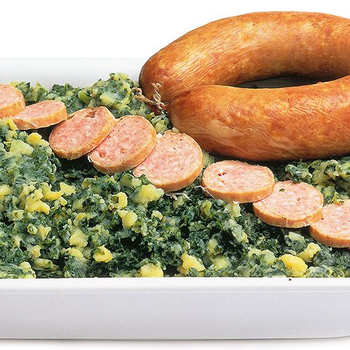

Curly Kale Mash

Description
Curly Kale Mash, or "Boerenkoolstampot" is tthe Dutch winter special. When you get off the ice after skating the Elfstedentocht,
nothing beats a plate of Curly Kale Mash. It is simple to make and can even be made in only 1 pan. It mainly contains curly kale and potatoes.
Ideally for the lazy cook who likes a filling and healthy meal.
Ingredients for 2 servings
- 400g Potatoes
- 200g Curly Kale
- 150ml Milk
- 100g Butter
- 1 smoked sausage in plastic
- Gravy
- Pan
Recipe
- Clean the potatoes and boil them for 20 minutes.
- The potatoes are done when you can break them with a fork.
- Cut the Kale in small bits. Boil them in a pan generously filled with water for about 25 minutes.
- Put the sausage in the plastic in one of the boiling pans for 20 minutes
- Drain the potatoes when they are done and mash them to a pulp.
- Add the butter and the milk to the pulp to create a creamy potato "batter". Add salt and pepper to flavour.
- Drain the Kale and add it to the potato mix.
- Remove the sausage from the plastic
- Serve the mash on a plate with a piece of sausage. Finish it with a splash of gravy.